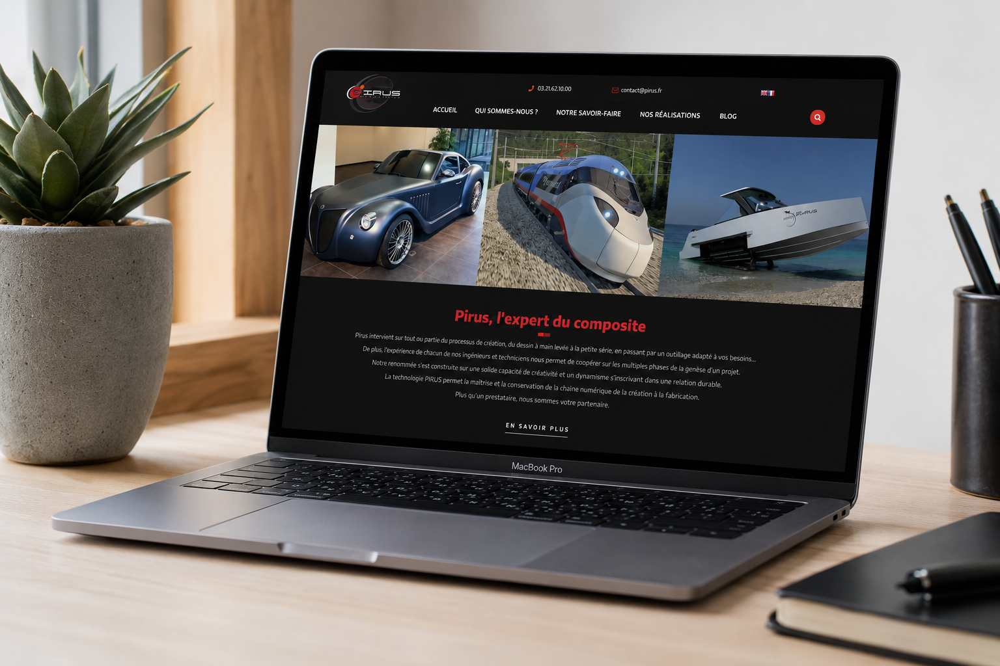
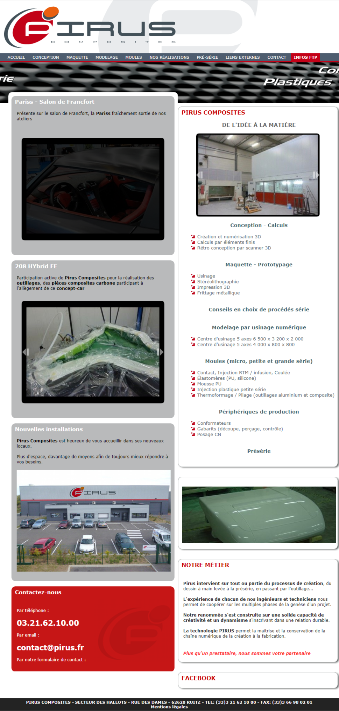
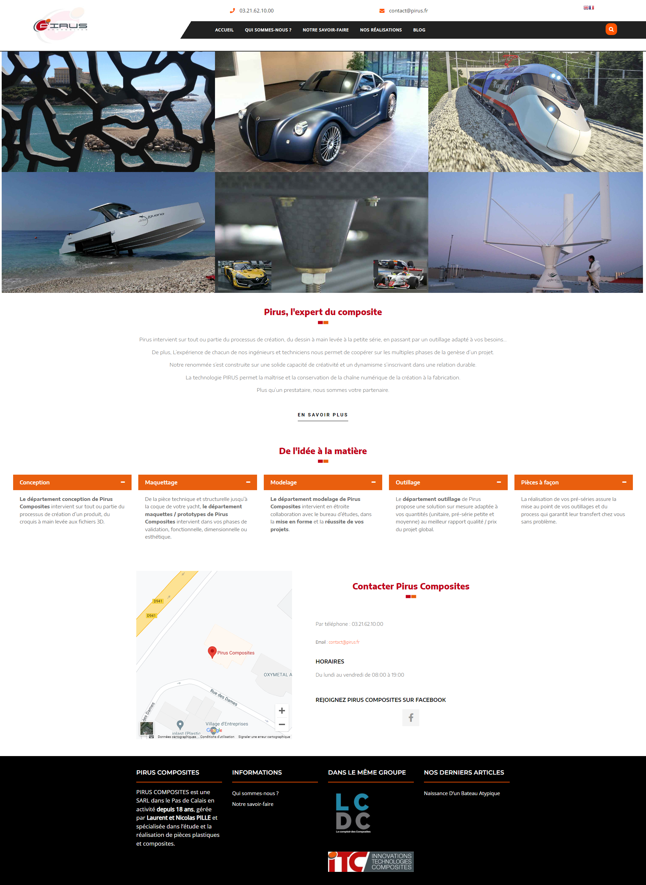

Refonte du site vitrine de Pirus Composites, PME du Pas-de-Calais spécialisée dans la conception et la fabrication de pièces plastiques et composites (automobile, nautisme, ferroviaire). Nouvelle identité visuelle et mise en valeur du savoir-faire technique.
Site vitrineWordPressUX/UIOrange · Noir · BlancCharte graphiqueMission 2019 · Meyou Paris

Site refondu · MacBook Pro · Mise en situation

⟵ Avant

Après ⟶
Comparaison avant / après · cliquer pour agrandir
Savoir-faire structuré en 5 étapes
Conception
Maquettage
Modelage
Outillage
Pièces à façon
Palette graphique
Orange
Anthracite
Rouge (ancien)
Gris clair
Blanc
La mission
En poste chez Meyou Paris en 2019 comme Chargée de communication digitale, j'ai pris en charge la refonte du site vitrine de Pirus Composites, PME du Pas-de-Calais spécialisée dans la conception et la fabrication de pièces plastiques et composites pour l'automobile, le nautisme et le ferroviaire. L'ancien site, avec sa mise en page dense et sa navigation en onglets multiples, ne mettait pas en valeur le niveau d'expertise technique de l'entreprise. L'objectif : moderniser l'identité visuelle et donner immédiatement à voir le savoir-faire à travers les réalisations phares de l'entreprise.
Les résultats
5
Étapes du savoir-faire structurées
100%
Responsive mobile
Nouvelle
Identité visuelle
La démarche UX
Le site d'origine reposait sur une mise en page en colonnes denses, une navigation par onglets peu hiérarchisée et une palette rouge vif qui datait visuellement l'entreprise. Les réalisations (pièces automobiles, nautiques, ferroviaires) étaient noyées dans de petits carrousels peu lisibles, alors qu'elles constituaient la meilleure preuve du savoir-faire de Pirus.
La refonte a mis ces réalisations au premier plan avec une mosaïque photo en pleine largeur dès la page d'accueil, puis a structuré le processus de fabrication en 5 étapes claires — conception, maquettage, modelage, outillage, pièces à façon — pour que chaque visiteur BtoB comprenne immédiatement l'étendue des compétences de l'entreprise.
Les choix graphiques
Mosaïque de réalisations
Grandes photos de projets (voiture, bateau, train) en page d'accueil — la preuve du savoir-faire technique dès le premier écran.
Palette orange & noir
Une identité plus dynamique et contemporaine que le rouge/gris d'origine, tout en gardant la rigueur attendue d'un acteur industriel.
Process en 5 étapes
Le savoir-faire "de l'idée à la matière" est présenté en cartes horizontales claires, à la place des longues listes à puces de l'ancien site.